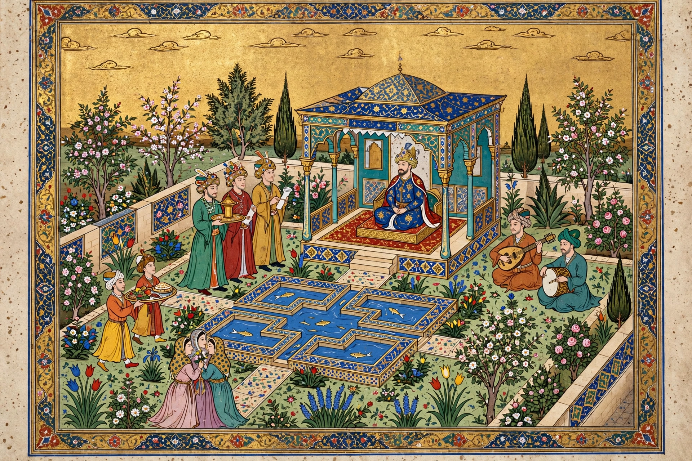

From Wikipedia, the free encyclopedia
| Persian miniature | |
|---|---|
| Medium | Opaque watercolour and gold on paper |
| Flourished | 13th–17th centuries |
| Great schools | Tabriz, Herat, Shiraz, Isfahan |
| Famous masters | Kamāl ud-Dīn Behzād, Reza Abbasi |
| Typical subjects | Shahnameh epics, court scenes, romances, hunts |
A Persian miniature is a small painting on paper, normally an illustration in a book or manuscript, or an image intended to be kept in an album (muraqqa). Developed in Persia from the 13th century onward — absorbing Chinese influences brought by the Mongol Ilkhanate — the art reached its height in the Timurid and Safavid courts, where royal workshops (kitabkhana) produced lavishly illustrated copies of the Shahnameh, the Khamsa of Nizami, and other classics.
Persian miniatures are characterised by fine brushwork in opaque watercolour heightened with gold and silver, a high horizon and flattened perspective, saturated jewel-like colour, and densely patterned compositions in which architecture, landscape, and figures interlock. Scenes are often framed by margins of tinted, gold-flecked paper. Artists worked collectively in the royal atelier: a master laid out the composition while assistants completed faces, figures, and landscape details.
The earliest surviving examples illustrated scientific treatises and the great world history of Rashid al-Din (c. 1310). The Herat school under the Timurids, led by Kamāl ud-Dīn Behzād, brought new naturalism and psychological depth around 1500; the Safavid court at Tabriz then produced the supreme monument of the art, the Shahnameh of Shah Tahmasp (c. 1525–35), with 258 full-page miniatures. Under Shah Abbas I, single-page drawings and paintings for albums by masters such as Reza Abbasi displaced book illustration. Persian miniature profoundly influenced Mughal and Ottoman painting.
Persian architecture · Shahnameh · Behzād · Mughal painting
